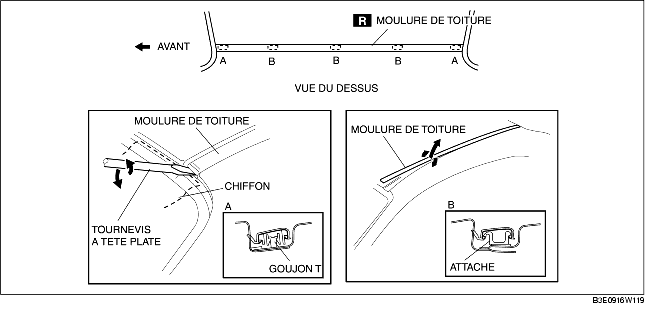

1. À l'aide d'un tournevis à tête plate ou équivalent, détacher la moulure de toit au niveau du goujon en T de la section A.
2. Tout en tirant la moulure de toit vers le haut, la séparer des attaches des sections B, puis retirer la moulure de toit.
